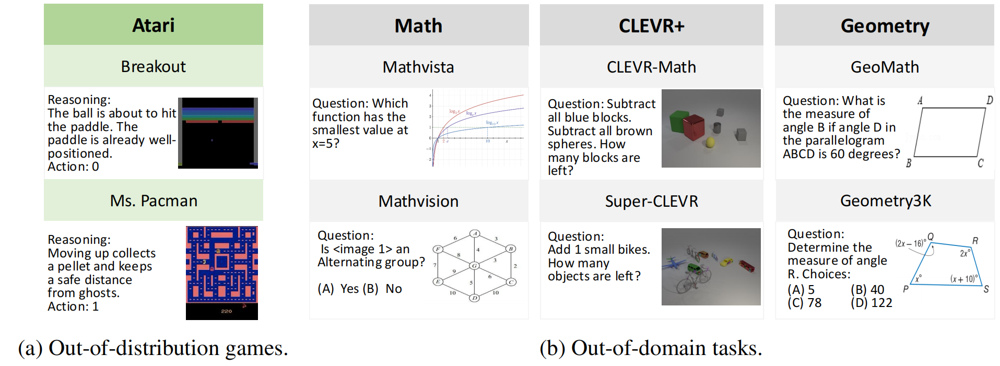
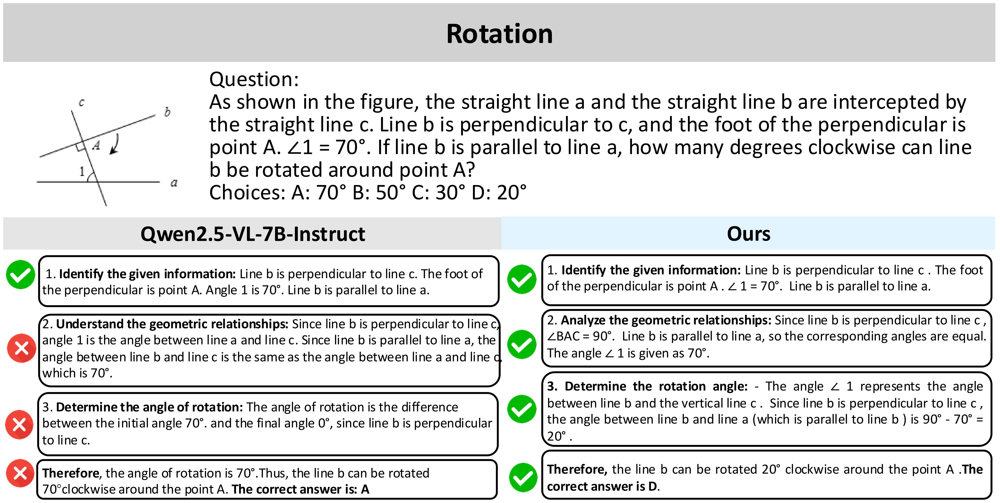

Developing generalizable reasoning capabilities in multimodal large language models (MLLMs) remains challenging. Motivated by cognitive-science findings that gameplay promotes transferable cognitive skills, we introduce Visual Game Learning (ViGaL), a post-training paradigm in which an MLLM develops out-of-domain multimodal reasoning abilities by playing arcade-like games. Concretely, we post-train a 7-billion-parameter MLLM with reinforcement learning on two simple games—Snake and a Rotation puzzle—without exposing it to any worked equations, diagrams, or step-by-step solutions. The resulting model exhibits substantial gains on diverse multimodal reasoning benchmarks, including MathVista, MathVerse, and MathVision, outperforming much larger proprietary models and models fine-tuned directly on visual-math corpora. Ablation studies show that each game cultivates complementary reasoning skills that combine synergistically. Our results suggest that synthetic, rule-based games are an effective, scalable pre-text task for unlocking generalizable multimodal reasoning in MLLMs.

Post-training MLLMs to reason through reinforcement learning with games. We illustrate ViGaL with two titles: the classic Snake and Rotation, a custom task probing spatial reasoning. In each episode the model receives multimodal state observations and reasoning instructions (e.g., “plan a path” in Snake or “estimate the angle” in Rotation), reflects to select an action, outputs its chain-of-thought and decision (e.g., best/worst move or predicted angle), and receives a reward. Over many games, the model internalizes strategies that later transfer to downstream multimodal reasoning.

Samples from our generalization benchmark. We evaluate ViGaL on two axes: (a) out-of-distribution generalization, where models trained on our visual games are tested on unseen Atari games, and (b) out-of-domain generalization, where the same models are assessed on multimodal reasoning datasets spanning mathematics, 3-D understanding in CLEVR+, and geometric problem solving.
| Model | Avg. | Math | CLEVR+ | Geometry | |||||||
|---|---|---|---|---|---|---|---|---|---|---|---|
| Avg. | MathVista | MathVerse | MathVision | Avg. | CLEVR-M | S-CLEVR | Avg. | GeoMath | Geo3K | ||
| Proprietary Model | |||||||||||
| GPT-4o | 48.7 | 48.1 | 61.4 | 50.2 | 30.4 | 51.2 | 68.1 | 34.3 | 46.8 | 50.2 | 43.5 |
| Gemini-2.0-Flash | 52.4 | 56.4 | 73.4 | 54.6 | 41.3 | 46.3 | 64.9 | 27.6 | 54.4 | 55.3 | 53.5 |
| General Multimodal Language Model | |||||||||||
| InternVL2.5-8B | 53.6 | 41.2 | 64.4 | 39.5 | 19.7 | 64.4 | 93.5 | 35.3 | 55.2 | 63.0 | 47.3 |
| Llava-OV-7B | — | — | 63.2 | 26.2 | — | 49.4 | 69.7 | 29.1 | 60.7 | 77.6 | 43.7 |
| Qwen2.5-VL-7B | 49.1 | 47.7 | 68.0 | 49.0 | 26.0 | 54.9 | 74.6 | 35.2 | 44.8 | 44.0 | 45.6 |
| Multimodal Reasoning Model Post-Trained on Qwen2.5-VL-7B | |||||||||||
| R1-Onevision-7B | 49.0 | 46.8 | 64.1 | 46.4 | 29.9 | 65.1 | 75.5 | 54.7 | 35.0 | 45.4 | 24.5 |
| R1-VL-7B | 49.9 | 42.7 | 63.5 | 40.0 | 24.7 | 68.0 | 87.4 | 48.6 | 39.0 | 42.0 | 36.1 |
| MM-Eureka-Qwen-7B | 52.6 | 50.1 | 73.0 | 50.3 | 26.9 | 79.3 | 98.4 | 60.1 | 28.4 | 53.1 | 3.8 |
| Reason-RFT-Zero-7B | 56.4 | 38.1 | 60.7 | 35.3 | 18.3 | 76.2 | 99.4 | 53.0 | 54.9 | 55.0 | 54.8 |
| VLAA-Thinker-7B | 62.0 | 48.7 | 68.0 | 51.7 | 26.4 | 83.4 | 94.7 | 72.1 | 53.9 | 51.1 | 56.6 |
| OpenVLThinker-7B | 62.2 | 47.8 | 70.2 | 47.9 | 25.3 | 82.4 | 93.8 | 71.0 | 56.4 | 49.2 | 63.5 |
| ViGaL – Snake | 61.4 | 49.4 | 70.9 | 49.7 | 27.5 | 82.8 | 92.7 | 72.8 | 52.1 | 47.5 | 56.8 |
| ViGaL – Rotation | 62.2 | 49.6 | 71.0 | 51.0 | 27.3 | 81.0 | 91.7 | 70.2 | 56.1 | 51.3 | 60.9 |
| ViGaL – Snake + Rotation | 63.1 | 50.6 | 71.9 | 52.4 | 27.5 | 81.7 | 91.9 | 71.4 | 57.1 | 51.0 | 63.3 |

Snake vs. Rotation: subfield differences on MathVerse. Positive values indicate domains where ViGaL-Snake excels; negative values signal advantages for ViGaL-Rotation. Snake primarily improves Expression and Coordinate reasoning, reflecting its 2-D grid dynamics, whereas Rotation boosts Angle and Length reasoning thanks to its 3-D object manipulation focus.
| Model | Wins (10) |
|---|---|
| ViGaL vs. | |
| Qwen2.5-VL-7B | 9 |
| Qwen2.5-VL-72B | 7 |
| Llama-4-Maverick | 7 |
| Gemini-2.5-Pro | 8 |
| Claude-3.7-Sonnet | 6 |
| GPT-4o | 8 |
| o4-mini | 6 |
| Model | Acc. (%) |
|---|---|
| ViGaL | 71.9 |
| Qwen2.5-VL-7B | 47.4 |
| Qwen2.5-VL-72B | 52.1 |
| Llama-4-Maverick | 66.2 |
| Gemini-2.5-Pro | 51.0 |
| Claude-3.7-Sonnet | 65.6 |
| GPT-4o | 61.5 |
| o4-mini | 70.8 |
| Game | ViGaL | Qwen2.5-7B |
|---|---|---|
| Space Invaders | 280.0 | 85.0 |
| Ms. Pacman | 1370.0 | 670.0 |
| Seaquest | 80.0 | 60.0 |
| Alien | 540.0 | 450.0 |
| Frogger | 7.0 | 5.0 |
| Breakout | 0.0 | 9.0 |
| Pong | -26.0 | -26.0 |
| Cumulative Reward | 2251.0 | 1253.0 |
Game Performance. (a) In Snake, ViGaL secures between six and nine wins out of ten against larger proprietary competitors. (b) In Rotation, ViGaL achieves the highest accuracy of all evaluated models. (c) Training on Snake and Rotation transfers to unseen Atari titles, with ViGaL nearly doubling the cumulative reward of Qwen2.5-VL-7B.

A MathVerse geometry item. The base model mis-identified the perpendicular relationship and rotation direction. ViGaL correctly recognized the configuration and produced the right angle.

A MathVerse graph-analysis example showing that ViGaL captures symmetry and coordinate information that the base model overlooks.
@article{vigal2025,
title ={ViGaL: Visual Game Learning Unlocks Generalizable Multimodal Reasoning},
author ={Anonymous},
journal ={arXiv preprint},
year ={2025}
}